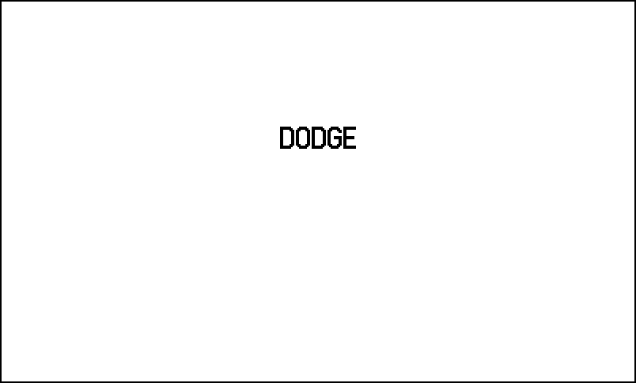
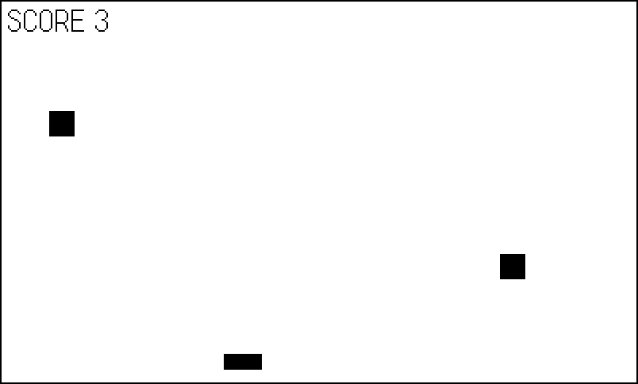
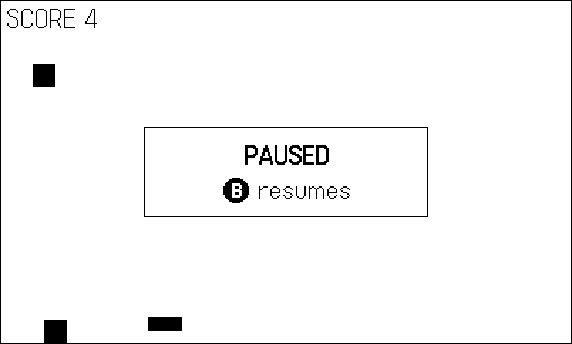
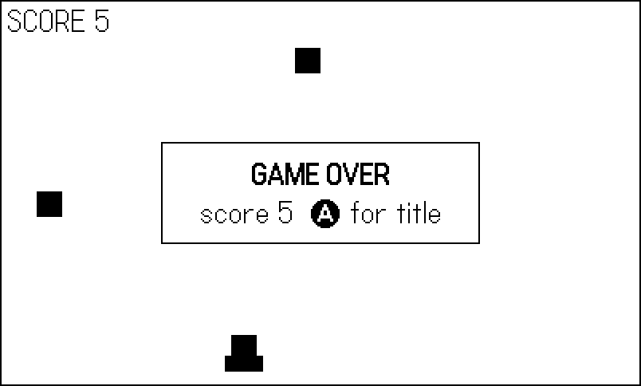
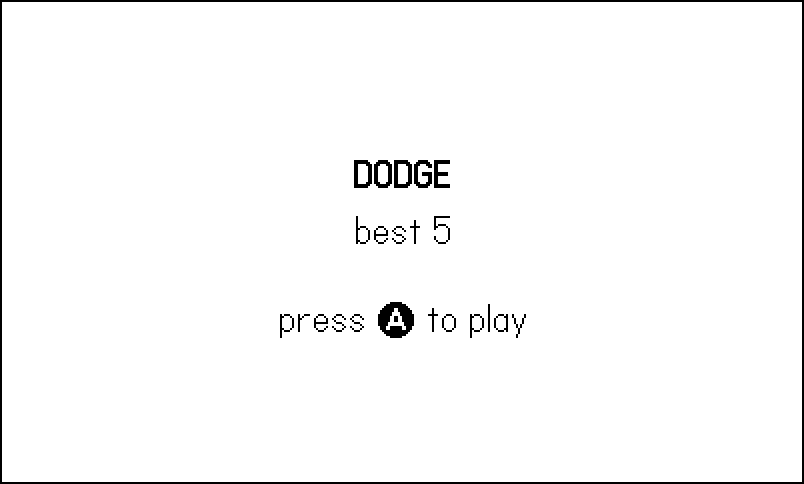

3 The Update Loop and Game Modes
Chapter 1 gave you one function, playdate.update, and one file. This chapter turns that into a game — a real one, with a title screen, play, pause, a game over, and a way back to the title. The game itself is as small as a game can honestly be (dodge the falling blocks), because the game is not the point. The point is the skeleton around it: a fixed timestep, one global state table, an input snapshot, and a mode machine that dispatches to whichever screen the player is on.
This skeleton is the most load-bearing code in the book. The example, 03-modes, is split into the six modules you will see at the start of every subsequent chapter — main.lua, config.lua, gamestate.lua, input.lua, game.lua, draw.lua — and every later example is this one with the middle swapped out. It is also, per Chapter 2, a working demonstration of module-per-concern globals: six files, six global tables, no surprises. The pattern is lifted directly from the shipped games; where a design choice was settled by one of them, the sidebar quotes the scar.
By the end you will know why every game here runs on a constant DT of 1/30 rather than measuring frame time, why “what screen am I on?” is a string field in a table called G, and how a game moves between its modes without leaving state behind.
3.1 The update contract
The deal between your game and the OS is simple. You define playdate.update; the OS calls it before every display frame — by default 30 times per second, adjustable with playdate.display.setRefreshRate(rate) up to 50, and down to the special value 0, meaning “call me as fast as possible.” Everything your game does, it does inside those calls.
The contract has a hard clause: if your update function takes longer than a frame, the OS does not skip ahead, buffer frames, or interpolate — it simply calls you as often as it can. Your game slows down. There is no spiral of death, but there is also no free lunch; the frame budget at 30 fps is 33 milliseconds, and Chapter 19 is about living inside it.
The example opens by stating its terms:
playdate.display.setRefreshRate(30)
-- The harness seeds math.random itself (figures are deterministic);
-- a human-played build gets a fresh world each launch.
if not Harness.enabled then
math.randomseed(playdate.getSecondsSinceEpoch())
endThirty frames per second is the SDK’s default and recommendation — a deliberate balance of animation smoothness, CPU headroom, and battery — and it is where all the games behind this book run. Setting it explicitly anyway is the skeleton making a promise out loud, because the next decision depends on it. (The seeding guard is explained by its comment: figure runs must be reproducible, human runs must not be. The book’s harness, when active, also flips the refresh rate to 0 so a scripted 390-frame run finishes in a couple of seconds — which is only safe because of what comes next.)
3.2 The fixed timestep: DT is a constant
Ask a desktop engine how long the last frame took and you get a measured, wobbling dt. The games in this book do not measure anything. They declare:
-- Every tuning constant in one global table. C.DT is the fixed
-- timestep: the display runs at 30 fps, so one update is 1/30 s.
C = {
DT = 1 / 30,
W = 400,
H = 240,
PLAYER_W = 24, -- paddle size, px
PLAYER_H = 10,
PLAYER_Y = 222, -- top of the paddle
PLAYER_SPEED = 160, -- px per second
BLOCK = 16, -- falling block side, px
FALL_SPEED = 150, -- px per second
SPAWN_T = 0.6, -- seconds between blocks
AIM_EVERY = 3, -- every Nth block spawns over the player
LOCKOUT = 0.4, -- seconds before game over accepts input
}C.DT = 1/30, a constant, always. Velocities are written in pixels per second, updates multiply by C.DT, and one update means one thirtieth of a game-second — regardless of what the wall clock did.
Why fix it? On this hardware, the honest options are “hit 30 fps” or “fix the frame you’re having,” and a fixed step buys four things:
- Determinism. Same inputs, same seed, same frames → the same game, bit for bit. That is what makes scripted runs, autopilots, and this book’s figure pipeline possible:
shots.luacan say “frame 200 shows the pause screen” and be right. A measureddtforfeits reproducibility on the first frame. - Stable physics. Tuning in Chapter 14 (gravity, jump impulses, collision substeps) behaves identically every run. Variable timesteps turn rare long frames into tunneling bugs that no one can reproduce.
- Graceful overload. If a frame runs long, the game drops to slow motion instead of teleporting objects across a double-length step. On a handheld, brief slow-motion under load feels dramatic; objects skipping through walls feels broken.
- Simple code. No accumulators, no interpolation, no clamp-the-delta hacks.
x += vx * C.DT, done.
The cost is honesty about the budget: at sustained overload the game is visibly slow rather than choppy-but-on-time. The shipped games treat that as a feature — a performance problem you can see in playtesting is a problem you fix (Chapter 19), not one you paper over.
Everything else in config.lua is the game’s tuning in one place: paddle speed, block fall speed, spawn cadence. Constants live in C rather than scattered through the logic so that “make it ten percent harder” is a one-line diff — and so the smoke builds of Chapter 18 can stage a variant config without touching game code.
3.2.1 Three clocks
The skeleton keeps time three ways, and later chapters lean on all three, so it is worth fixing the roles now:
frame— an integer, incremented inplaydate.update, never reset. This is machine time: the harness captures “frame 200,” the figure script keys decisions off it, and because the timestep is fixed, frame numbers are reproducible coordinates into a run.G.t— seconds since launch,+ C.DTper tick. World time: ambient animation, anything that should keep breathing across screens.G.modeT— seconds since the last mode change. Screen time: blinking prompts, lockouts, ceremonies. Reset byG.setMode, and by nothing else.
The discipline that matters: game logic never reads frame, and the harness never needs G.t. When a later chapter’s boss “enrages after 20 seconds in the arena,” that is a fourth, local clock — a field on the boss, ticked by C.DT — not a subtraction against G.t, which would break the moment a pause mode stops ticking the fight.
3.3 G: one table to hold the state
Module-per-concern answered where code lives. Where does state live? In one global table, G:
-- One global table holds ALL mutable game state. Every module
-- reads and writes G; nothing hides state in file-locals.
G = {
mode = "title", -- "title" | "play" | "pause" | "gameover"
modeT = 0, -- seconds spent in the current mode
t = 0, -- seconds since launch
score = 0, -- blocks survived this run
best = 0, -- best score this session
player = { x = 200 },
blocks = {}, -- falling { x, y } squares
spawnT = 0, -- countdown to the next block
spawned = 0, -- how many blocks have spawned this run
}
-- The only sanctioned way to change mode: it resets the mode
-- clock that drives blinking prompts and input lockouts.
function G.setMode(m)
G.mode = m
G.modeT = 0
endEvery piece of mutable state the game owns is a field of G. The rule sounds naive and scales remarkably well; it is how a 28-room metroidvania keeps its head straight, not just a toy. What it buys:
- One place to look. Debugging starts at
G. The Simulator console canprintany of it; the harness heartbeat of Chapter 18 serializes chunks of it every few seconds. - A natural save boundary. Chapter 17 saves games by copying fields of
Ginto the datastore and back. No gathering step. - Reset by construction. Starting a new run is “rebuild these fields,” as
Game.reset()below does — impossible to forget a file-local you cannot see.
The field to stare at is the first one. G.mode is a string naming the screen the player is on, and its comment is a contract: those four names, and only those, are legal. The convention of documenting the whole enum at the declaration comes straight from the shipped games — here is the bubble-shooter Bauble making the same move with five:
-- bauble/source/gamestate.lua:3
G = {
state = "title", -- "title" | "play" | "levelclear" | "retry" | "gameover"
frame = 0,
score = 0,
lives = C.START_LIVES,
level = 1,Strings, not integers or enum tables, on purpose: they cost nothing at this scale, they read back out of a debugger or a heartbeat JSON as themselves ("mode":"gameover" needs no decoding), and a typo’d mode fails loudly — dispatching on a misspelled string crashes the frame with a nil call, rather than silently running the wrong screen.
G.setMode is three lines and earns its place as the only sanctioned way to change modes: it stamps G.modeT, the seconds-in-this-mode clock. Half the polish in a mode machine — blinking prompts, input lockouts, timed ceremonies — turns out to hang off that little clock.
3.4 The input snapshot
The skeleton touches the hardware in exactly one function:
-- Input.gather() is the ONLY place the game touches the hardware.
-- Everything downstream consumes this snapshot table, and the
-- book's capture bot (or a game's autopilot) is consulted first.
Input = {}
local pd <const> = playdate
function Input.gather(frame)
local bot = Harness.input(frame)
if bot then return bot end
return {
left = pd.buttonIsPressed(pd.kButtonLeft),
right = pd.buttonIsPressed(pd.kButtonRight),
confirm = pd.buttonJustPressed(pd.kButtonA),
pause = pd.buttonJustPressed(pd.kButtonB),
}
endInput.gather returns a plain table — the snapshot — describing this frame’s intent: left, right, confirm, pause. Everything downstream (Game.update, the mode functions) consumes the snapshot and never asks playdate.buttonIsPressed anything directly.
The pattern earns its keep three ways. It centralizes the level-versus-edge decision — movement wants buttonIsPressed (held), menu actions want buttonJustPressed (tapped), and here is the one place where that is decided (Chapter 9 goes deep). It names things: downstream code reads inp.confirm, and when Chapter 10 remaps confirm to a crank gesture, one function changes. And the first two lines are the seam: the harness bot is consulted first, and if a script is driving, its table simply is the snapshot. The bot does not simulate button hardware; it speaks the same language the game already listens to. Every autopilot in Chapter 18, and every figure in this chapter, walked in through that door.
3.5 The mode machine
Now the heart of the chapter. Four screens, four functions, one table:
-- One function per mode. Each consumes this frame's input
-- snapshot, mutates G, and draws. G.mode picks which one runs.
local modes = {}
function modes.title(inp)
if inp.confirm then
Game.reset()
G.setMode("play")
end
Draw.title()
end
function modes.play(inp)
Game.update(C.DT, inp)
if inp.pause then G.setMode("pause") end
Draw.play()
end
function modes.pause(inp)
-- No Game.update: the world is frozen, but still drawn.
if inp.pause or inp.confirm then G.setMode("play") end
Draw.play()
Draw.pauseOverlay()
end
function modes.gameover(inp)
-- The lockout stops a frantic last dodge from skipping the
-- score screen before the player has seen it.
if G.modeT > C.LOCKOUT and inp.confirm then
G.setMode("title")
end
Draw.play()
Draw.gameoverOverlay()
endAnd the loop that drives it:
local frame = 0
local function tick()
G.t = G.t + C.DT
G.modeT = G.modeT + C.DT
modes[G.mode](Input.gather(frame))
Harness.set("mode", G.mode)
end
function playdate.update()
frame = frame + 1
Harness.frame(frame, tick)
endmodes[G.mode](Input.gather(frame)) is the whole state machine: look up the current mode’s function, hand it the snapshot. Each mode function has the same shape — react to input, mutate G, draw — and owns everything about its screen. title waits for confirm and launches a fresh run; play runs the simulation; pause pointedly does not run the simulation but still draws the frozen world; gameover waits out its lockout and returns to the title.
Transitions are just assignments through G.setMode, and they read like stage directions: on confirm, reset the game and enter play. The reset-on-entry placement is a deliberate idiom — the transition into a mode does the setup, so there is no way to reach play with a half-stale world, no matter which screen you came from.
Two structural choices deserve a word:
A dispatch table, not a class hierarchy. Modes could be objects with enter/exit/update methods. On a game this size — on most games this platform can hold — four functions and a string beat the ceremony. When a mode needs entry behavior, the transition writes it (as title→play resets the game); when it needs a clock, G.modeT is already ticking.
Dispatch table versus if/elseif chain. Molt, the largest game in the case-study fleet, uses the chain form of the same machine:
-- molt/source/main.lua:112
if G.mode == "title" then
Draw.title()
if Input.confirm() then
G.mode = "play"
G.t = 0
Sfx.serve()
Music.set(Rooms.music())
end
elseif G.mode == "play" thenSame shape, same string field, chain instead of table — with seven modes and interleaved sub-states, Molt’s author wanted the transitions inline where the neighboring logic lives. The two forms are freely interchangeable; the table version keeps each mode’s code in one named place, which is why the skeleton (and this book) uses it. What both share is the part that matters: one string names the screen, and one place per frame decides what runs.
Molt’s outer loop also shows what the skeleton’s playdate.update grows up into — the same wrapper, plus a running cost measurement:
-- molt/source/main.lua:232
local frame = 0
function playdate.update()
frame = frame + 1
local t0 = playdate.getCurrentTimeMilliseconds()
Harness.frame(frame, tick)
local ms = playdate.getCurrentTimeMilliseconds() - t0
G.updMs = (G.updMs or 0) * 0.9 + ms * 0.1
endThat last line is an exponential moving average of update cost in milliseconds — nine parts history, one part this frame — kept in G where the heartbeat can report it. When Chapter 19 asks “are we inside the 33 ms budget?”, this is the instrument that answers. The skeleton omits it only to stay minimal; you will bolt it on in Chapter 19.
The SDK offers three ways to step outside the one-loop model, and it is worth knowing why this book’s skeleton uses none of them. playdate.wait(ms) suspends update callbacks entirely — ideal for a static message screen, but the display freezes unless you flush it by hand, and timers keep not running while animators do, a mismatch the reference itself warns about. playdate.stop() / playdate.start() halt and resume callbacks for genuinely event-driven apps. The trouble with all three in a game is that a stopped loop is a world you cannot draw, test, or script: a pause implemented with playdate.stop() cannot show the frozen play field the way Figure 3.3 does, and no autopilot can drive code that is not running. Making pause a mode keeps every screen inside the same contract. One genuinely useful cousin: playdate.update is invoked as a coroutine, so a long asset-loading pass can coroutine.yield() mid-work to let the OS refresh a progress bar — the sanctioned way to be slow on purpose.
3.6 The game in the middle
The simulation and rendering are deliberately ordinary — they are the replaceable organs of the skeleton. The simulation:
-- Runs on every title -> play transition, so each run starts
-- from the same clean slate no matter how the last one ended.
function Game.reset()
G.score = 0
G.player.x = C.W / 2
G.blocks = {}
G.spawnT = 0
G.spawned = 0
endfunction Game.update(dt, inp)
local p = G.player
if inp.left then p.x = p.x - C.PLAYER_SPEED * dt end
if inp.right then p.x = p.x + C.PLAYER_SPEED * dt end
local half = C.PLAYER_W / 2
p.x = math.max(half, math.min(C.W - half, p.x))
G.spawnT = G.spawnT - dt
if G.spawnT <= 0 then
G.spawnT = C.SPAWN_T
G.spawned = G.spawned + 1
local x = math.random(C.W - C.BLOCK)
if G.spawned % C.AIM_EVERY == 0 then
x = p.x - C.BLOCK / 2 -- this one hunts the player
end
G.blocks[#G.blocks + 1] = { x = x, y = -C.BLOCK }
end
for i = #G.blocks, 1, -1 do
local b = G.blocks[i]
b.y = b.y + C.FALL_SPEED * dt
if Game.hits(b, p) then
G.best = math.max(G.best, G.score)
G.setMode("gameover")
Harness.count("deaths")
elseif b.y > C.H then
table.remove(G.blocks, i)
G.score = G.score + 1
Harness.count("dodged")
end
end
endEverything moves in pixels per second times C.DT, per the fixed timestep. The one design flourish is AIM_EVERY: every third block spawns directly above the paddle, so standing still is fatal — the game guarantees pressure, and (not coincidentally) it guarantees the figure script a way to end a run on schedule. When a block lands, G.setMode("gameover") fires from inside Game.update; the mode machine does not care who assigns the string, and the current modes.play call simply finishes its frame and never runs again.
Collision is an axis-aligned overlap test:
function Game.hits(b, p)
local half = C.PLAYER_W / 2
return b.y + C.BLOCK > C.PLAYER_Y
and b.y < C.PLAYER_Y + C.PLAYER_H
and b.x + C.BLOCK > p.x - half
and b.x < p.x + half
endDrawing is a read-only projection of G — Draw functions render state and never mutate it, which is what made “pause draws the frozen world” a one-liner:
function Draw.play()
gfx.clear(gfx.kColorWhite)
local p = G.player
local half = C.PLAYER_W / 2
gfx.fillRect(p.x - half, C.PLAYER_Y, C.PLAYER_W, C.PLAYER_H)
for _, b in ipairs(G.blocks) do
gfx.fillRect(b.x, b.y, C.BLOCK, C.BLOCK)
end
gfx.drawText("SCORE " .. G.score, 4, 4)
end-- Pause and game over draw ON TOP of the frozen play field, so
-- the player never loses sight of the run they are in.
function Draw.pauseOverlay()
Draw.panel("PAUSED", "Ⓑ resumes")
end
function Draw.gameoverOverlay()
Draw.panel("GAME OVER",
"score " .. G.score .. " Ⓐ for title")
end
function Draw.panel(heading, sub)
gfx.setColor(gfx.kColorWhite)
gfx.fillRect(100, 88, 200, 64)
gfx.setColor(gfx.kColorBlack)
gfx.drawRect(100, 88, 200, 64)
gfx.drawTextAligned("*" .. heading .. "*", 200, 100,
kTextAlignment.center)
gfx.drawTextAligned(sub, 200, 124, kTextAlignment.center)
endThe overlays draw on top of the play field rather than replacing it. Pause keeps the run visible under the panel (Figure 3.3), and game over leaves the fatal arrangement of blocks on screen — the player gets to see what killed them (Figure 3.4).
3.7 Transition patterns
The machine so far is correct; these three small patterns make it feel finished. All three run on G.modeT, the clock setMode resets.
The blinking prompt. The title’s “press Ⓐ” pulses at 1 Hz:
function Draw.title()
gfx.clear(gfx.kColorWhite)
gfx.drawTextAligned("*DODGE*", 200, 78, kTextAlignment.center)
if G.best > 0 then
gfx.drawTextAligned("best " .. G.best, 200, 106,
kTextAlignment.center)
end
-- G.modeT drives the blink: on for half a second, off for half.
if math.floor(G.modeT * 2) % 2 == 0 then
gfx.drawTextAligned("press Ⓐ to play", 200, 150,
kTextAlignment.center)
end
endmath.floor(G.modeT * 2) % 2 flips every half second of mode time — it starts a fresh blink cycle whenever the title is entered, which is why the prompt is always lit when the screen first appears.
The input lockout. modes.gameover ignores confirm for C.LOCKOUT seconds. The player who dies mid-button-mash would otherwise skip the score panel without ever seeing it; 0.4 seconds of deafness fixes a real usability bug that pure logic says cannot exist.
Reset on entry, not on exit. Game.reset() runs in the title→play transition. Exits are unreliable — a run can end from play (death) or from pause (a future quit menu) — but every road into play passes through one assignment, so that is where the clean slate is guaranteed.
For anything fancier — a wipe, a room-to-room slide — the pattern scales by adding a mode: Molt has a "transition" mode that owns its timer and drawing, entered and left like any other screen rather than special-cased into play.
3.8 Driving the whole loop
The chapter’s figures are one deterministic 390-frame run through every mode, scripted by the example’s shots.lua:
-- Figure script: drive the whole mode loop in one deterministic
-- run. The bot starts the game, dodges for the play shot, pauses
-- and resumes, then steers INTO a block so the run ends at a
-- known point, and finally confirms its way back to the title.
Shots = {
seed = 7,
last = 390,
shots = {
["modes-title"] = 30,
["modes-play"] = 150,
["modes-pause"] = 200,
["modes-gameover"] = 330,
["modes-title-again"] = 380,
},
script = function(frame)
local b = {}
if frame == 60 then b.confirm = true end
if frame == 180 or frame == 220 then b.pause = true end
if G.mode == "play" then
if frame < 180 then
Shots.dodge(b)
elseif frame > 220 then
Shots.seek(b)
end
elseif G.mode == "gameover" then
b.confirm = frame > 335 and frame % 5 == 0
end
return b
end,
}
-- Sidestep the lowest block that threatens the paddle.
function Shots.dodge(b)
local px, danger = G.player.x, nil
for _, bl in ipairs(G.blocks) do
if bl.y > 90 and bl.y < C.PLAYER_Y
and math.abs(bl.x + C.BLOCK / 2 - px) < 44 then
if not danger or bl.y > danger.y then danger = bl end
end
end
if not danger then return end
local goRight = danger.x + C.BLOCK / 2 < px
if px < 50 then goRight = true end
if px > C.W - 50 then goRight = false end
b.right = goRight
b.left = not goRight
end
-- Chase the lowest block still above the paddle, to end the run.
function Shots.seek(b)
local bestY, bx = nil, nil
for _, bl in ipairs(G.blocks) do
if bl.y < C.PLAYER_Y and (not bestY or bl.y > bestY) then
bestY, bx = bl.y, bl.x + C.BLOCK / 2
end
end
if not bx then return end
b.left = bx < G.player.x - 2
b.right = bx > G.player.x + 2
endThe script is a tiny autopilot speaking the Input.gather snapshot language: press confirm at frame 60, dodge (sidestep the lowest threatening block) until the pause beat at 180, resume at 220, then seek — steer into a block on purpose — so the run ends deterministically, and finally confirm back to the title. Note that it reads G to decide: scripts and autopilots are just more code in the same one-global world, and “when in doubt, look at the game state” is exactly how the real autopilots of Chapter 18 work.



Draw.play(), just no Game.update.


G.
The last figure is the quiet payoff. Figure 3.5 is the title screen again, one full lap later — but now it shows a best score, because G.best outlived the run while everything Game.reset() owns was rebuilt. If your mode machine can do a full lap without leaking or losing state, the skeleton is sound.
Every example from Chapter 4 onward is this project with the middle replaced: same six modules, same G, same Input.gather seam, same mode table (sometimes with different mode names), same harness wrapper at the bottom of main.lua. When a later chapter shows you only its interesting module, the rest is exactly what you just read.
3.9 What you know now
playdate.updateis called at the display refresh rate — default and recommended 30 fps, max 50,0meaning unthrottled — and if it overruns, the OS just calls it less often: the game slows down.- The examples run a fixed timestep:
C.DT = 1/30, velocities in pixels per second. Fixed DT buys determinism (scripted runs, reproducible figures), stable physics, and slow-motion instead of tunneling under load. - All tuning constants live in the global
C(config.lua); all mutable state lives in the globalG(gamestate.lua), with the legal mode strings documented right at the declaration. G.modeis a string; the frame is dispatched bymodes[G.mode](inp)— a dispatch table or anif/elseifchain, interchangeably. Transitions are assignments throughG.setMode, which resets theG.modeTclock.Input.gather()snapshots the hardware once per frame into a named table, and consults the harness bot first — the seam that makes scripted figures and autopilots free.- Transition polish hangs off
G.modeT: blinking prompts, the game-over input lockout, and reset-on-entry transitions. - The whole skeleton —
main,config,gamestate,input,game,draw— is the template every later example clones.
Next, Chapter 4: the screen gets interesting. One bit of color turns out to hold an entire palette, if you know how to lie with patterns.